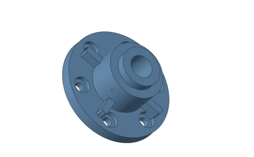

带筋轴承座与连接结构
轴承座同时涉及环形支承、安装底板、加强筋和紧固件布局。旋转模型，检查中心通孔、前盖与底座之间的装配关系。
模型结构与观察重点
- 中心轴承孔与环形前盖
- 四孔安装底板、双侧支承与加强筋
- 环向布置的 8 个六角紧固件
如何查看这个案例
在首页案例区选择“带筋轴承座与连接结构”对应的标签，使用鼠标拖动旋转、滚轮缩放或右键平移。通过网格显示查看离散结构，使用复位视角恢复初始观察位置。

示意范围与实际验证
这里的交互模型在浏览器中生成，用于解释工程结构和几何关系，并非 GME 内核导出的精确计算结果。实际应用需结合对应模块、输入参数、容差及版本测试；本页不提供性能或精度对比结论。